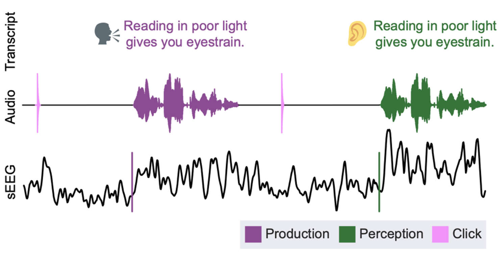
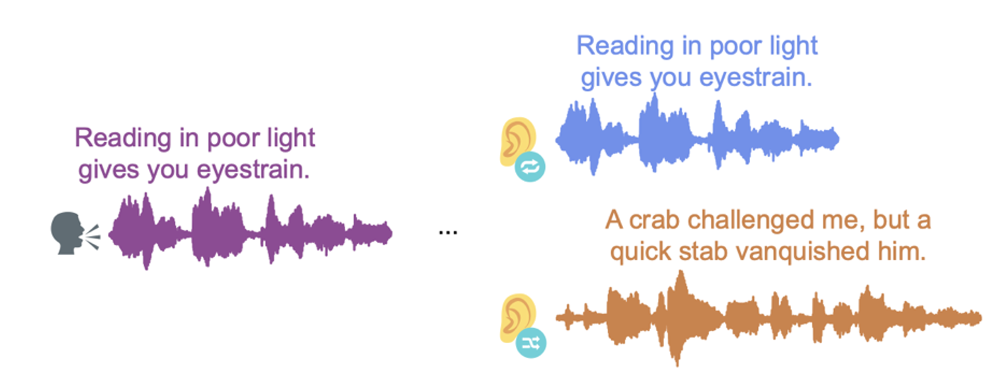

Read the paper: Kurteff et al. Biorxiv 2024.
This is an interactive viewer to accompany our paper Processing of auditory feedback in perisylvian and insular cortex. In our study, participants read sentences aloud and listened to playback of their own voice.

We recorded neural data from intracranial electrodes from patients with epilepsy as they performed this task.
Research performed by Garret Lynn Kurteff, Alyssa M. Field, Saman Asghar, Elizabeth C. Tyler-Kabara, Dave Clarke, Howard L. Weiner, Anne E. Anderson, Andrew J. Watrous, Robert J. Buchanan, Pradeep N. Modur, Liberty S. Hamilton.
Viewer created by Liberty Hamilton using 3js
Trials were split up into consistent and inconsistent playback, where consistent matched exactly what they had said in that trial, and inconsistent playback would play audio of a previous sentence. In all cases, the audio is spoken by the patient.

You can use this viewer to click on individual electrodes and see their responses during different conditions in the speaking and listening task. You can view all electrodes projected onto a single atlas brain, or you can choose to view individual participants by choosing from the dropdown menus at the top right.
Device lines will draw lines between electrode channels that are part of the same implanted sEEG device
Click on electrodes to view their high gamma evoked potential responses. For Response Type you can choose between:
When you click on an electrode, you will also see information about the participant ID, electrode name (given by the clinical montage), and anatomical area.
This electrode shows strong onset responses during listening that are suppressed during speaking.
You're ready to explore the brain viewer on your own! Try clicking on electrodes, changing the angle of view, or trying different colors and transparencies for the brain. Have fun!